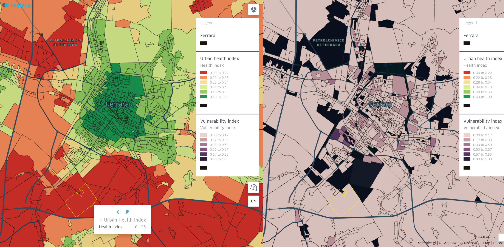
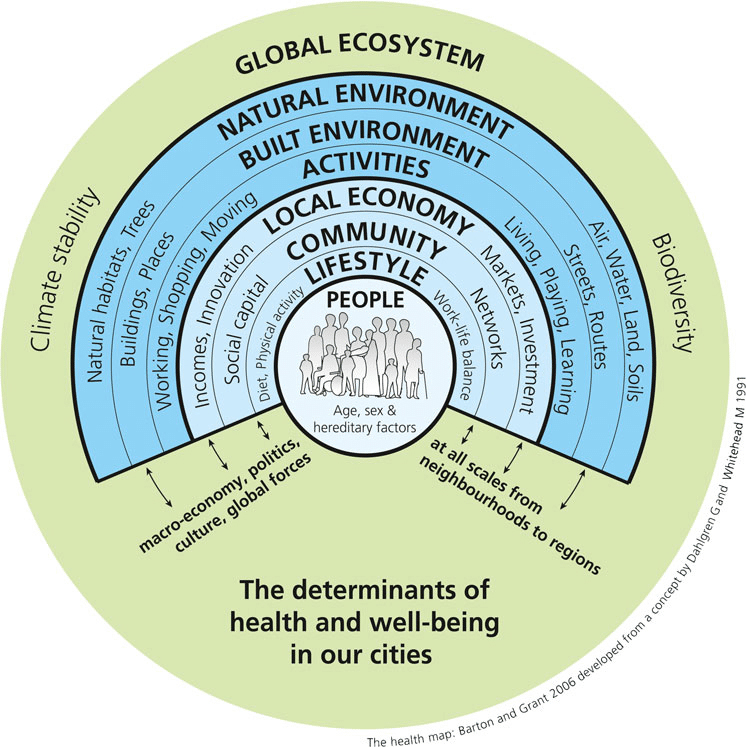
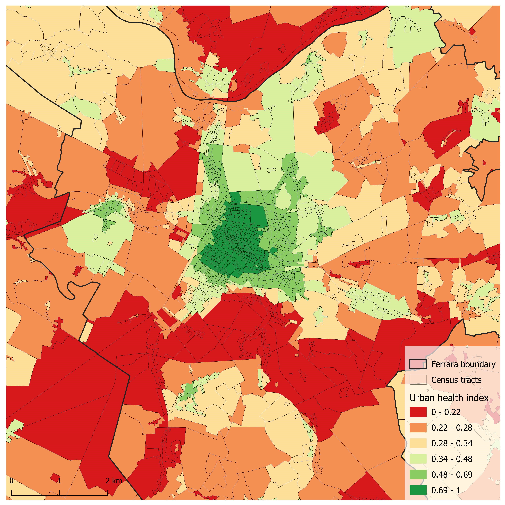
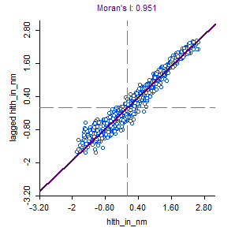
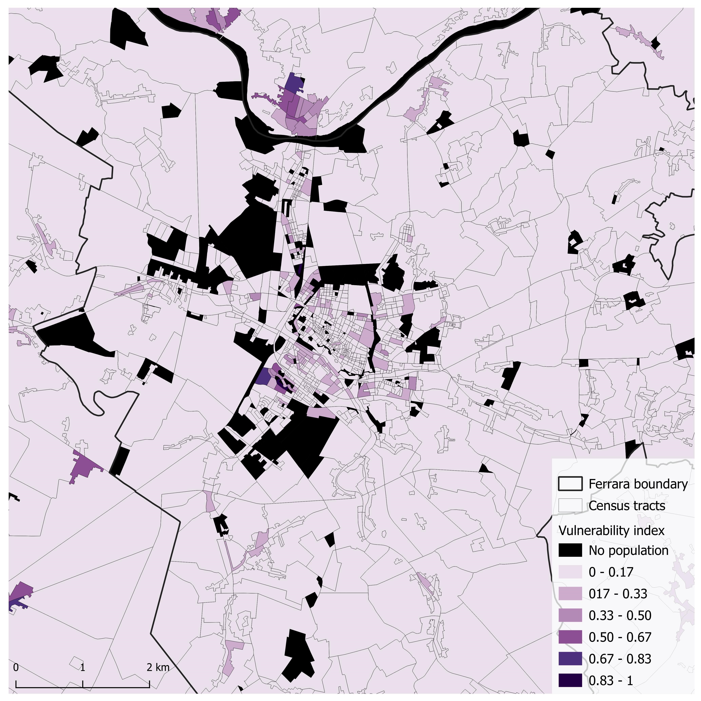
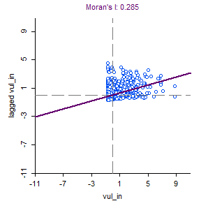
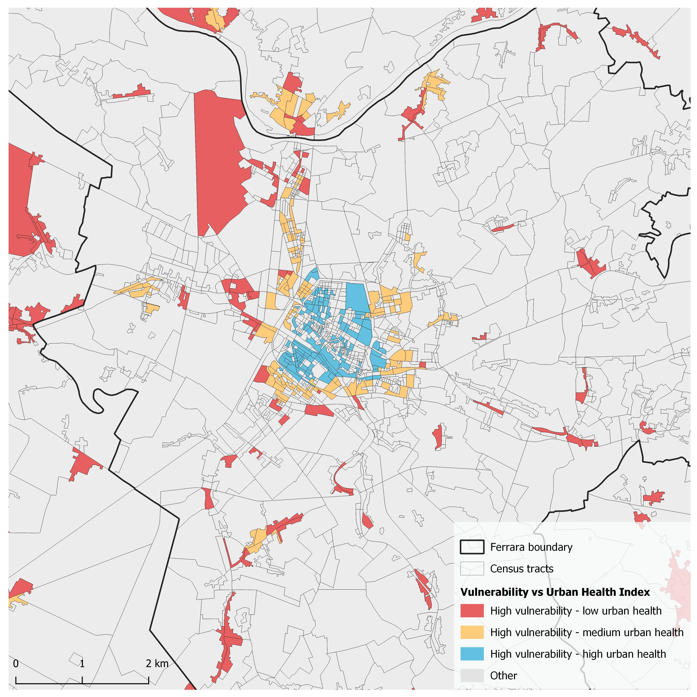

Mapping urban health and vulnerability
August 30, 2022

Click to open interactive visualization
With a population of 132,000, Ferrara is a town in the region of Emilia-Romagna in Italy. It has a prominently compact city centre with a few industrial zones and suburbs on its periphery. While working on the project, AirBreak Ferrara, I had the opportunity to play around with the city's open data and formulate an urban health index. The goal of this index was to understand the quality of life in the neighbourhoods (here, census tracts) of the city against the vulnerability of its citizens. This concept can be visualized through a framework called the health map, developed by H. Barton and M. Grant that integrates public health and urban planning through trans-scaler and trans-sectoral determinants.

A healthy city is one that is continually creating and improving those physical and social environments and expanding those community resources which enable people to mutually support each other in performing all the functions of life and in developing their maximum potential.
(Hancock & Duhl, 1986)
Urban Health Index
Based on literature review, an urban health index was proposed with the aim to gauge the urbanism quality determinants at neighbourhood – city – region scales. The index captures these determinants that play a crucial role in defining the physical and mental health of an individual and can be intervened with urban planning and design decisions by the local and regional actors.
Other health determinants such as culture, lifestyle, income and social capital as mentioned in the health map are not included in the index due to their scope being far wider and intangible than local urban and planning elements. However, spatial and functional solutions do have the influence to shape some of these intangible aspects such as lifestyle and cultural changes through strategies enabling walkability, greater access to healthy food and so on.
With the help of literature on urban and public health, the following determinants and their measures along with weightages based on their perceived importance were identified and used as variables to develop the urban health index.
| Urban Health Determinants | Measures | Weightage | |
|---|---|---|---|
| 1 | Environment | Proximity to highways and arterial streets Land surface temperature NDVI Proximity to industrial use Proximity to airport |
-1 -1 +1 -1 -2 |
| 2 | Cultural and social infrastructure | 15 minutes accessibility to services: Schools and kindergartens Cultural activities such as library, community centres, museums Parks Playground and sports |
+1 +0.5 +1 +1 |
| 3 | Mobility | Access to public transit stations Presence of bike lanes Bike rental Bike repair Bike parking Pedestrian only streets |
+1 +1 +0.25 +0.25 +0.25 +1 |
| 4 | Built up and land uses | Land use entropy Combustion from buildings using polluting fuels |
+1 -1 |
| 5 | Comfort in public spaces | Presence of comfort amenities: Public benches Public toilets Drinking taps Water fountains |
+1 +1 +1 +1 |
Some of the measures such as access to public transit stations, access to social and cultural services, and presence of comfort amenities were used as individual normalized values that were generated with overlay analysis of their pedsheds in GIS. In conclusion, the following equation was adopted to calculate a health index for each census tracts in the study area:

where HI is the urban health index of census tract i, m is the value of the urban health measure and w is the weightage allotted to measure m.
The result interestingly aligns with the geographical form and layout of the city. Ferrara, like many Italian cities, is a radial city with a distinctly compact and walkable core, and surrounded by smaller peripheral towns and suburbs along with industrial premises that moved out of urban settlements since last few decades. It also has two major highways, A13 and RA8 that intersect at the south-west of the city at Casello FE Sud. Considering these aspects, it can be seen that the census tracts with highest urban health index values are located at the city centre and its adjacent blocks. Whereas, the rural territorial units, blocks along major highways and that of industrial premises in the periphery of the town were found having lower urban health index values. On conducting the Moran's I spatial autocorrelation test to understand the clustering pattern, the high value of 0.95 (graph 1) indicates strong positive clustering. This means that neighbourhoods or census tracts in Ferrara are experiencing a quality of life that gradually decreases as one moves outwards from the city centre. Additionally, low value census tracts are also clustered along major highways and in the industrial zones.


Vulnerability Index
While external factors of built environment and services are crucial in defining the public health, not all individuals are equally capable to avail the services or are exposed to urban issues. The demographic and socio-economic profile plays an important role in defining the health and vulnerability of an individual or a household. Therefore, weighing such vulnerability determinants against the access (and threat) to built environment can better help understand the disparities in urban public health.
While an urban health index visualizes the access and availability of determinants that support public health (neighbourhood livability), the vulnerability index captures the capacity – or lack thereof, of a territorial unit and its residents to access those determinants by factoring in their vulnerabilities.
To gauge the socio-demographic vulnerability of residents of each census tracts into an index, normalized sum of individuals and households from following groups were used from census 2011 data of Italy:
- Population below 10 years old
- Population over 70 years old
- Illiterate individuals
- Unemployed individuals
- Stateless / foreign individuals
- Rented households
As Map 2. and Moran's I test (graph 2.) demonstrate, the vulnerability index does not show any strong pattern of clustering. The near zero Moran's I value, 0.285 implies a random distribution of the variable. The values in top-right quadrant that indicate clustering of positive values, belong to the census tracts located in the city centre of Ferrara and the northern town of Occhiobello. This mean high vulnerability is comparatively clustered. But, the recurrent presence of data points in the rest of the quadrants indicate random dispersion of census tracts with medium and low values of vulnerability index.


Takeaway – Which neighbourhoods need improvement?
The ultimate objective of mapping and understanding urban health and vulnerability for the city of Ferrara was to juxtapose them and locate the neighbourhoods or census tracts that need improvement. Neighbourhoods with high vulnerability index coupled with low urban health index value would be categorized as the areas most warranted for improvement. This was achieved by classifying both the indices into three levels each and highlighting the combinations of concern. Many census tracts at the city centre were found with high vulnerability index as well as urban health index, whereas those on the direct periphery continued to have high / medium vulnerability but just medium urban health index. Such cases indicate scope for improvement of urban quality to cater to high vulnerability of the units. Lastly, census tracts with high vulnerability and low urban health index were found in the rural and peripheral towns, some along highways and near the industrial zones. The other category includes census tracts with:
- low vulnerability and high urban health or
- low vulnerability and low urban health or
- invalid vulnerability index (case of census tracts with zero residential population)

Notes:
- The data analysis was conducted using open data as an academic exercise. The indices were formulated and the parametric weightages were assumed by the author. Thus, final results might deviate from actual reality.
- The database was cleaned, compiled, analyzed and visualized in QGIS software. Open-source software Geoda was also used for some spatio-statistical analyses. The dynamic mapping was done using kepler.gl and mapbox.
Cartographier la santé urbaine et la vulnérabilité
30 août 2022
Cliquez pour ouvrir la visualisation interactive
Avec une population de 132 000 habitants, Ferrare est une ville de la région d'Émilie-Romagne en Italie. Son centre-ville est particulièrement compact, avec quelques zones industrielles et banlieues en périphérie. En travaillant sur le projet AirBreak Ferrara, j'ai eu l'occasion d'explorer les données ouvertes de la ville et de formuler un indice de santé urbaine. L'objectif de cet indice était de comprendre la qualité de vie dans les quartiers (ici, les sections de recensement) de la ville par rapport à la vulnérabilité de ses citoyens. Ce concept peut être visualisé à travers un cadre appelé la carte de la santé, développé par H. Barton et M. Grant, qui intègre la santé publique et l'urbanisme à travers des déterminants trans-échelles et trans-sectoriels.
Une ville saine est une ville qui crée et améliore continuellement ses environnements physiques et sociaux, et qui développe les ressources communautaires permettant aux personnes de se soutenir mutuellement dans l'accomplissement de toutes les fonctions de la vie et dans le développement de leur potentiel maximal.
(Hancock & Duhl, 1986)
Indice de santé urbaine
Sur la base d'une revue de la littérature, un indice de santé urbaine a été proposé dans le but d'évaluer les déterminants de la qualité urbanistique aux échelles du quartier, de la ville et de la région. L'indice capture ces déterminants qui jouent un rôle crucial dans la définition de la santé physique et mentale d'un individu et sur lesquels les acteurs locaux et régionaux peuvent intervenir par des décisions d'urbanisme et de conception.
D'autres déterminants de la santé tels que la culture, le mode de vie, le revenu et le capital social, comme mentionné dans la carte de la santé, ne sont pas inclus dans l'indice en raison de leur portée bien plus large et intangible que les éléments locaux d'urbanisme et de planification. Cependant, les solutions spatiales et fonctionnelles ont bien l'influence de façonner certains de ces aspects intangibles, tels que les changements de mode de vie et culturels, grâce à des stratégies favorisant la marchabilité, un meilleur accès à une alimentation saine, etc.
À l'aide de la littérature sur la santé urbaine et publique, les déterminants suivants et leurs mesures, ainsi que les pondérations basées sur leur importance perçue, ont été identifiés et utilisés comme variables pour développer l'indice de santé urbaine.
| Déterminants de la santé urbaine | Mesures | Pondération | |
|---|---|---|---|
| 1 | Environnement | Proximité des autoroutes et des rues artérielles Température de surface NDVI Proximité des zones industrielles Proximité de l'aéroport |
-1 -1 +1 -1 -2 |
| 2 | Infrastructure culturelle et sociale | Accessibilité à 15 minutes des services : Écoles et jardins d'enfants Activités culturelles telles que bibliothèques, centres communautaires, musées Parcs Aires de jeux et sports |
+1 +0,5 +1 +1 |
| 3 | Mobilité | Accès aux stations de transport en commun Présence de pistes cyclables Location de vélos Réparation de vélos Stationnement pour vélos Rues piétonnes |
+1 +1 +0,25 +0,25 +0,25 +1 |
| 4 | Cadre bâti et utilisation des sols | Entropie de l'utilisation des sols Combustion des bâtiments utilisant des combustibles polluants |
+1 -1 |
| 5 | Confort dans les espaces publics | Présence d'aménagements de confort : Bancs publics Toilettes publiques Fontaines à boire Fontaines d'eau |
+1 +1 +1 +1 |
Certaines mesures telles que l'accès aux stations de transport en commun, l'accès aux services sociaux et culturels, et la présence d'aménagements de confort ont été utilisées comme valeurs normalisées individuelles, générées par une analyse de superposition de leurs zones piétonnes dans un SIG. En conclusion, l'équation suivante a été adoptée pour calculer un indice de santé pour chaque section de recensement dans la zone d'étude :
où HI est l'indice de santé urbaine de la section de recensement i, m est la valeur de la mesure de santé urbaine et w est la pondération attribuée à la mesure m.
Le résultat s'aligne de manière intéressante avec la forme géographique et le plan de la ville. Ferrare, comme de nombreuses villes italiennes, est une ville radioconcentrique avec un noyau particulièrement compact et accessible à pied, entouré de petites villes périphériques et de banlieues, ainsi que de zones industrielles qui ont quitté les noyaux urbains depuis quelques décennies. Elle possède également deux autoroutes principales, l'A13 et la RA8, qui se croisent au sud-ouest de la ville à Casello FE Sud. En tenant compte de ces aspects, on peut observer que les sections de recensement avec les valeurs les plus élevées de l'indice de santé urbaine sont situées au centre-ville et dans les îlots adjacents. En revanche, les unités territoriales rurales, les îlots le long des autoroutes principales et ceux des zones industrielles en périphérie de la ville présentent des valeurs plus faibles de l'indice de santé urbaine. En effectuant le test d'autocorrélation spatiale de Moran pour comprendre le schéma de regroupement, la valeur élevée de 0,95 (graphique 1) indique un fort regroupement positif. Cela signifie que les quartiers ou sections de recensement de Ferrare connaissent une qualité de vie qui diminue progressivement à mesure que l'on s'éloigne du centre-ville. De plus, les sections de recensement à faible valeur sont également regroupées le long des autoroutes principales et dans les zones industrielles.
Indice de vulnérabilité
Bien que les facteurs externes de l'environnement bâti et des services soient cruciaux pour définir la santé publique, tous les individus ne sont pas également capables de bénéficier des services ou ne sont pas exposés de la même manière aux problèmes urbains. Le profil démographique et socio-économique joue un rôle important dans la définition de la santé et de la vulnérabilité d'un individu ou d'un ménage. Par conséquent, pondérer ces déterminants de vulnérabilité par rapport à l'accès (et à la menace) à l'environnement bâti peut mieux aider à comprendre les disparités en matière de santé publique urbaine.
Alors qu'un indice de santé urbaine visualise l'accès et la disponibilité des déterminants qui soutiennent la santé publique (habitabilité du quartier), l'indice de vulnérabilité capture la capacité – ou l'absence de capacité – d'une unité territoriale et de ses résidents à accéder à ces déterminants en intégrant leurs vulnérabilités.
Pour évaluer la vulnérabilité sociodémographique des résidents de chaque section de recensement sous forme d'indice, la somme normalisée des individus et des ménages des groupes suivants a été utilisée à partir des données du recensement de 2011 de l'Italie :
- Population de moins de 10 ans
- Population de plus de 70 ans
- Personnes analphabètes
- Personnes au chômage
- Personnes apatrides / étrangères
- Ménages locataires
Comme le montrent la carte 2 et le test de Moran (graphique 2), l'indice de vulnérabilité ne présente aucun schéma de regroupement marqué. La valeur de Moran proche de zéro, 0,285, implique une distribution aléatoire de la variable. Les valeurs dans le quadrant supérieur droit, qui indiquent un regroupement de valeurs positives, appartiennent aux sections de recensement situées au centre-ville de Ferrare et dans la ville septentrionale d'Occhiobello. Cela signifie qu'une vulnérabilité élevée est comparativement regroupée. Cependant, la présence récurrente de points de données dans le reste des quadrants indique une dispersion aléatoire des sections de recensement avec des valeurs moyennes et faibles de l'indice de vulnérabilité.
Conclusion – Quels quartiers ont besoin d'être améliorés ?
L'objectif ultime de la cartographie et de la compréhension de la santé urbaine et de la vulnérabilité pour la ville de Ferrare était de les juxtaposer et de localiser les quartiers ou sections de recensement nécessitant une amélioration. Les quartiers avec un indice de vulnérabilité élevé couplé à une faible valeur de l'indice de santé urbaine seraient classés comme les zones les plus justifiables d'une amélioration. Cela a été réalisé en classant les deux indices en trois niveaux chacun et en mettant en évidence les combinaisons préoccupantes. De nombreuses sections de recensement au centre-ville présentaient à la fois un indice de vulnérabilité élevé et un indice de santé urbaine élevé, tandis que celles de la périphérie immédiate continuaient d'avoir une vulnérabilité élevée / moyenne mais seulement un indice de santé urbaine moyen. Ces cas indiquent une marge d'amélioration de la qualité urbaine pour répondre à la forte vulnérabilité des unités. Enfin, des sections de recensement avec une vulnérabilité élevée et un faible indice de santé urbaine ont été trouvées dans les villes rurales et périphériques, certaines le long des autoroutes et près des zones industrielles. La catégorie autre comprend les sections de recensement avec :
- faible vulnérabilité et santé urbaine élevée ou
- faible vulnérabilité et faible santé urbaine ou
- indice de vulnérabilité invalide (cas des sections de recensement avec une population résidentielle nulle)
Remarques :
- L'analyse des données a été réalisée à l'aide de données ouvertes dans le cadre d'un exercice académique. Les indices ont été formulés et les pondérations paramétriques ont été assumées par l'autrice. Ainsi, les résultats finaux pourraient s'écarter de la réalité effective.
- La base de données a été nettoyée, compilée, analysée et visualisée dans le logiciel QGIS. Le logiciel open-source Geoda a également été utilisé pour certaines analyses spatio-statistiques. La cartographie dynamique a été réalisée à l'aide de kepler.gl et mapbox.